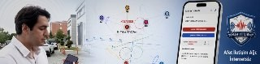

SUBÜ Bilgisayar Mühendisliği öğrencisi ve teknoloji girişimcisiyim. Akademik bilgilerimi sadece teoride bırakmıyor, donanım ve yazılımla gerçek sorunları çözen sistemlere dönüştürüyorum.
Odak alanlarım: Gömülü Sistemler, P2P Haberleşme, Sinyal İşleme ve Web/Mobil Geliştirme. Bugüne kadar patent başvurusunda bulunduğum RescueRadar (Enkaz İçi Konumlandırma) projesi ve Play Store'da 5.000'den fazla indirilen Afet İletişim Ağı uygulaması gibi kritik önem taşıyan projeler geliştirdim.
AR-GE projeleri, donanım/yazılım entegrasyonları ve girişimcilik ekosistemindeki fırsatlara her zaman açığım.
İletişime GeçEğitim ve profesyonel deneyimlerim.
Sakarya Uygulamalı Bilimler Üniversitesi
Kampüs bilgisayar laboratuvarlarında donanım bakımı, OS dağıtımı (System formatting, image deployment) ve yazılım lisans yönetimi. Ayrıca AR-GE laboratuvarlarında donanım/yazılım projelerinin geliştirilmesi.
Sakarya Uygulamalı Bilimler Üniversitesi
Dell PowerEdge R720 sunucularında donanım yönetimi. VMware ESXi, Proxmox VE, VirtualBox gibi platformlarda sanallaştırma, Windows Server ve Linux sistem yönetimi, TrueNAS ve SMB (Samba) ile depolama çözümleri yapılandırması.
Sakarya Uygulamalı Bilimler Üniversitesi
Gömülü sistemler, algoritma geliştirme ve bilgisayar bilimleri temelleri.
Necmettin Erbakan Fen Lisesi
Fen Bilimleri ve Matematik ağırlıklı temel eğitim.